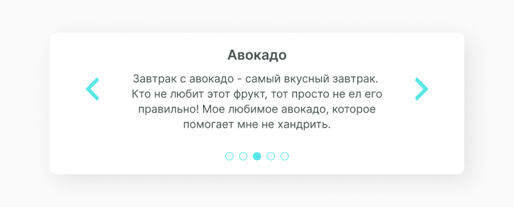

Slider Comments
Слайлер с комментариями это тот же слайдер, но вместо фотографий используем текстовую информацию. Обычно так визуализируют на сайтах комментарии или какую либо информацию. Прочитать подробнее о slider.
Структура компонента
Структура компонента так же похожа на структуру slider. Однако вместо фотографий представлены параграфы с заголовками. Расположение элементов управления также отличается. Видимое состояние так же опирается на meatballs. Вот как выглядит этот слайдер.
Реализация
Для начала в папке с компонентами создаём новую папку O_SliderComments, в неё кладём файлы jsx и css, в которых будем создавать и стилизовать компонент. Затем описываем функционал слайдера с компонентами. Получаем следующий код.
import React, { PureComponent } from 'react'
import Q_MeatBall from '../../quarks/Q_MeatBall/Q_MeatBall.jsx'
import './O_SliderComments.css'
import '../../quarks/Q_Icon.css'
export default class O_SliderComments extends PureComponent {
constructor(props) {
super(props)
this.state = {
slides: props.slides,
activeIndex: 0
}
}
updateIndex = (newIndex) => {
if (newIndex < 0) {
newIndex = this.state.slides.length - 1
} else if (newIndex >= this.state.slides.length) {
newIndex = 0
}
this.setState((prevState) => ({
...prevState,
activeIndex: newIndex
}))
}
render() {
const { activeIndex, slides } = this.state
return (
<div className="O_SliderComment">
<div className="W_SliderCommentContent">
<div className="Q_Icon arrow-left" onClick={() => this.updateIndex(activeIndex - 1)}></div>
<div className="W_SliderCommentOpenFrame">
<div className="C_SliderCommentRail" style={{ transform: `translateX(-${activeIndex * 600}px)` }}>
{slides.map(({ title, content }) => (
<div key={title} className="W_SliderCommentText">
<h3>{title}</h3>
<p>{content}</p>
</div>
))}
</div>
</div>
<div className="Q_Icon arrow-right" onClick={() => this.updateIndex(activeIndex + 1)}></div>
</div>
<div className="W_SliderCommentsStatus">
{slides.map((img, index) => (
<Q_MeatBall key={index} selected={index === activeIndex} />
))}
</div>
</div>
)
}
}Теперь задаём стили для компонента. Код выглядит так.
.O_SliderComment {
position: relative;
width: 740px;
overflow: hidden;
display: flex;
flex-direction: column;
}
.O_SliderComment .W_SliderCommentContent {
width: 100%;
display: flex;
justify-content: space-between;
align-items: center;
}
.O_SliderComment .W_SliderCommentOpenFrame {
width: 600px;
display: flex;
overflow: hidden;
transform: translate3d(0, 0, 0);
}
.O_SliderComment .C_SliderCommentRail {
display: flex;
transition: transform 0.3s;
}
.O_SliderComment .W_SliderCommentText {
width: 600px;
text-align: center;
color: #495151;
}
.O_SliderComment .W_SliderCommentText p {
font-size: 16px;
line-height: 140%;
font-weight: 200;
}
.O_SliderComment .W_SliderCommentText h3 {
font-size: 20px;
font-weight: 600;
}
.O_SliderComment .W_SliderCommentsStatus {
display: flex;
margin: 20px auto;
}
.O_SliderComment .Q_Icon {
width: 35px;
height: 35px;
}Вместо картинок выводим текстовую информацию. Заполняем массив и выводим компонент в файле сборщика. Выглядит он у нас так slider comments.
import React from 'react'
import ReactDOM from 'react-dom'
import O_SliderComments from '../../components/organisms/O_SliderComments/O_SliderComments.jsx'
const slides = [
{
title: 'Авокадо',
content:
'Завтрак с авокадо - самый вкусный завтрак.
Кто не любит этот фрукт, тот просто не ел его правильно!
Мое любимое авокадо, которое помогает мне не хандрить.'
},
{
title: 'Киви',
content:
'Фрукт этот это просто кладезь витаминов и микроэлементов,
содержит в себе и кальций и магний и железо и калий,
так же богат витаминами такими как йод, фосфор
и цинк, а так же витамины группы В,C, PP, E и A.'
}
]
document.addEventListener('DOMContentLoaded', () => {
ReactDOM.render(
<O_SliderComments slides={slides} />,
document.body
)
})Получаем следующий результат:
Ссылки
Также для тебя ссылки на Figma с дизайн системой и GitHub с библиотекой компонентов.
Составляющие
В этот компонент часто выводятся следующие компоненты.